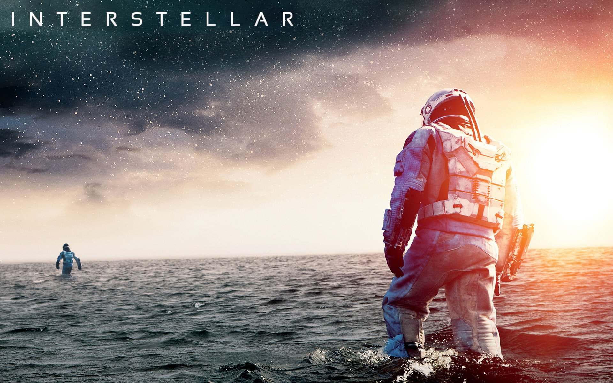
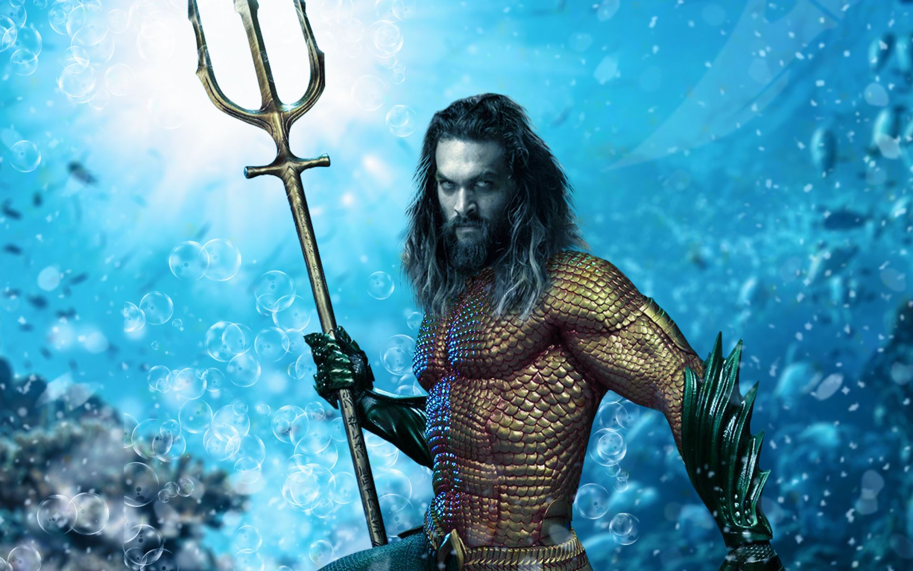
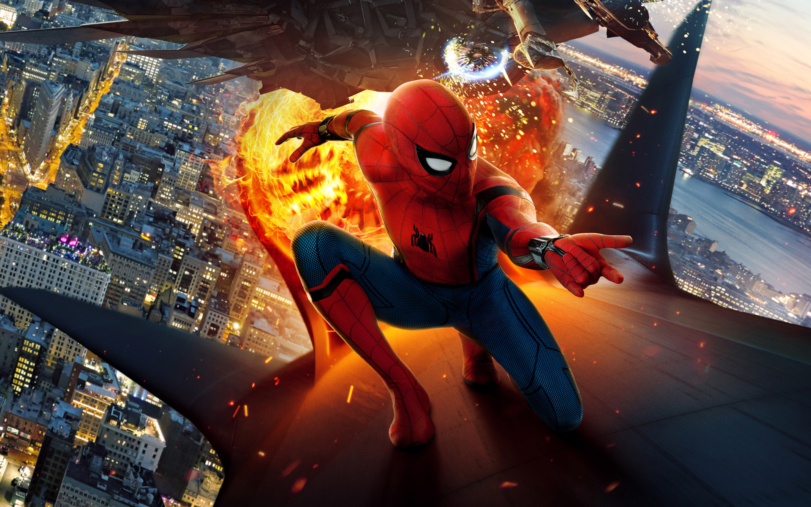

INTERSTELLAR
2014 . PG-13 . 2h 49m Sifi - Adventure - Drama Director: Christopher Nolan
INTERSTELLAR is a 2014 epic science fiction film co-written, directed, and produced by Christopher Nolan.
It stars Matthew McConaughey, Anne Hathaway, Jessica Chastain, Bill Irwin, Ellen Burstyn, Matt Damon, and Michael Caine. Set in a dystopian future where humanity is struggling to survive,
the film follows a group of astronauts who travel through a wormhole near Saturn in search of a new home for mankind.
Brothers Christopher and Jonathan Nolan wrote the screenplay, which had its origins in a script Jonathan developed in 2007.
Caltech theoretical physicist and 2017 Nobel laureate in Physics Kip Thorne was an executive producer, acted as a scientific consultant, and wrote a tie-in book, The Science of Interstellar.
Cinematographer Hoyte van Hoytema shot it on 35 mm movie film in the Panavision anamorphic format and IMAX 70 mm. Principal photography began in late 2013 and took place in Alberta, Iceland,
and Los Angeles. Interstellar uses extensive practical and miniature effects and the company Double Negative created additional digital effects.
Interstellar premiered on October 26, 2014, in Los Angeles, California. In the United States, it was first released on film stock, expanding to venues using digital projectors.
The film had a worldwide gross over $677 million (and $773 million with subsequent re-releases), making it the tenth-highest grossing film of 2014. It received acclaim for its performances, direction, screenplay, musical score, visual effects, ambition, themes, and emotional weight.
It has also received praise from many astronomers for its scientific accuracy and portrayal of theoretical astrophysics. Since its premiere, Interstellar gained a cult following, and now is regarded by many sci-fi experts as one of the best science-fiction films of all time.
Interstellar was nominated for five awards at the 87th Academy Awards, winning Best Visual Effects, and received numerous other accolades.
|

AQUAMAN 2018 . PG-13 . 2h 23m Action - Adventure - Fantasy Director: James Wan
Aquaman is a 2018 American superhero film based on the DC character of the same name. Produced by DC Entertainment and Peter Safran Productions, and distributed by Warner Bros.
Pictures, it is the sixth film in the DC Extended Universe (DCEU). The film is directed by James Wan, from a screenplay by David Leslie Johnson-McGoldrick and Will Beall.
It stars Jason Momoa as Arthur Curry / Aquaman, who sets out to lead the underwater kingdom of Atlantis and stop his half-brother, King Orm, from uniting the seven underwater kingdoms to destroy the surface world.
Amber Heard, Willem Dafoe, Patrick Wilson, Dolph Lundgren, Yahya Abdul-Mateen II, and Nicole Kidman appear in supporting roles.
Development began in 2004 but did not gain traction until Man of Steel was released in 2013. In August 2014, Beall and Kurt Johnstad were hired to write competing scripts. Wan signed on as director in April 2015, and in July 2016,
the film moved forward with Beall's screenplay. The main cast was confirmed through 2016 and early 2017. Principal photography began in Australia in May 2017, taking place at Village Roadshow Studios on the Gold Coast, Queensland, Australia, with additional production teams in Canada,
Italy and Morocco. Filming concluded the following October. Several vendors provided visual effects, ranging from high-detail hair simulations to the creation of CGI animals and locations.
Aquaman premiered in London on November 26, 2018, and was released in the United States on December 21. It grossed $1.148 billion worldwide, making it the highest-grossing DCEU film, the highest-grossing film based on a DC Comics character, and the fifth-highest-grossing film of 2018.
The film received praise for its visual effects, production design, action sequences, and Momoa's performance, while being criticized for its script, dialogue, and story. An animated miniseries set after the film, Aquaman: King of Atlantis, aired from October 14 to October 28, 2021,
while a live-action sequel film, Aquaman and the Lost Kingdom, is set to be released on December 25, 2023.
|

SPIDERMAN2017 . PG-13 . 2h 13m Adventure - Sifi - Action Director: Jon Watts
Spider-Man: Homecoming is a 2017 American superhero film based on the Marvel Comics character Spider-Man, co-produced by Columbia Pictures and Marvel Studios, and distributed by Sony Pictures Releasing. It is the second Spider-Man film reboot and the 16th film in the Marvel Cinematic Universe (MCU).
The film was directed by Jon Watts, from a screenplay by the writing teams of Jonathan Goldstein and John Francis Daley, Watts and Christopher Ford, and Chris McKenna and Erik Sommers. Tom Holland stars as Peter Parker / Spider-Man, alongside Michael Keaton, Jon Favreau, Gwyneth Paltrow, Zendaya, Donald
Glover, Jacob Batalon, Laura Harrier, Tony Revolori, Bokeem Woodbine, Tyne Daly, Marisa Tomei, and Robert Downey Jr. In the film, Peter Parker tries to balance high school life with being Spider-Man while facing the Vulture (Keaton).
In February 2015, Marvel Studios and Sony reached a deal to share the film rights for Spider-Man, integrating the character into the established MCU. The following June, Holland was cast as the title character, and Watts was hired to direct. This was followed shortly by the hiring of Daley and Goldstein.
In April 2016, the film's title was revealed, along with additional cast, including Downey in his MCU role of Tony Stark / Iron Man. Principal photography began in June 2016 at Pinewood Atlanta Studios in Fayette County, Georgia, and continued in Atlanta, Los Angeles, and New York City. The other screenwriters
were revealed during filming, which concluded in Berlin in October 2016. The production team made efforts to differentiate the film from previous Spider-Man films.
Spider-Man: Homecoming premiered in Hollywood on June 28, 2017, and was released in the United States on July 7, as part of Phase Three of the MCU. Homecoming grossed over $880 million worldwide, becoming the second-most-successful Spider-Man film and the sixth-highest-grossing film of 2017. It received praise for
the light tone, its focus on Parker's high school life, and the performances, particularly of Holland and Keaton. Two sequels have been released: Spider-Man: Far From Home (2019) and Spider-Man: No Way Home (2021). A new trilogy of live-action films from Sony and Marvel Studios is in development.
|
DOCTOR STRAINGE2016 . PG-13 . 1h 55m Adventure - Fantasy - Action Director: Scott Derrickson
Stranger Things is an American science fiction horror drama television series created by the Duffer Brothers, who also serve as showrunners and are executive producers along with Shawn Levy and Dan Cohen.
Produced by Monkey Massacre Productions and Levy's 21 Laps Entertainment, the first season was released on Netflix on July 15, 2016. Its second, third, and fourth seasons followed in October 2017, July 2019,
and May and July 2022, respectively. In February 2022, the series was renewed for a fifth and final season.
Set in the 1980s, primarily in the fictional town of Hawkins, Indiana, the series centers on a number of mysteries and supernatural events occurring around the town and their impact on an ensemble of child and adult characters.
It stars Winona Ryder, David Harbour, Finn Wolfhard, Millie Bobby Brown, Gaten Matarazzo, Caleb McLaughlin, Natalia Dyer, Charlie Heaton, Cara Buono, Matthew Modine, Noah Schnapp, Sadie Sink, Joe Keery, Dacre Montgomery, Sean Astin, Paul Reiser,
Maya Hawke, Priah Ferguson, and Brett Gelman.
The Duffer Brothers developed Stranger Things as a mix of investigative drama and supernatural elements portrayed with horror and childlike sensibilities, while infusing references to the pop culture of the 1980s. Several thematic and directorial elements were inspired
by the works of Steven Spielberg, John Carpenter, David Lynch, Stephen King, Wes Craven and H. P. Lovecraft. They also took inspiration from experiments conducted during the Cold War and conspiracy theories involving secret government experiments.
One of Netflix's flagship series, Stranger Things has attracted record viewership on the streaming platform. The series has been critically acclaimed for its characterization, atmosphere, acting, soundtrack, directing, writing, and homages to 1980s films. It has received numerous awards
and nominations, including nominations from the Golden Globe Awards, British Academy Television Awards, Directors Guild of America Awards, Writers Guild of America Awards, and Grammy Awards, as well as wins from the Primetime Emmy Awards, Screen Actors Guild Awards, American Film Institute, Critics'
Choice Television Awards, and People's Choice Awards.
|